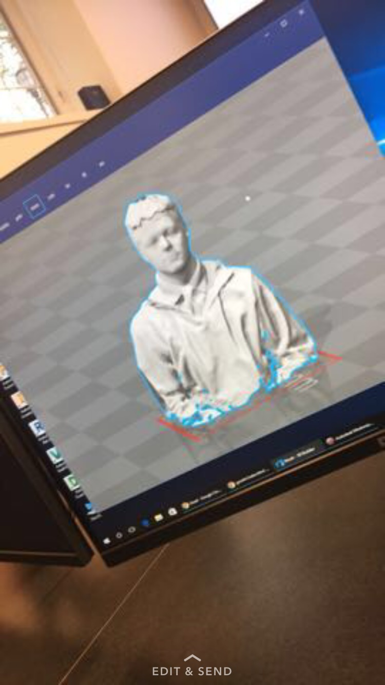
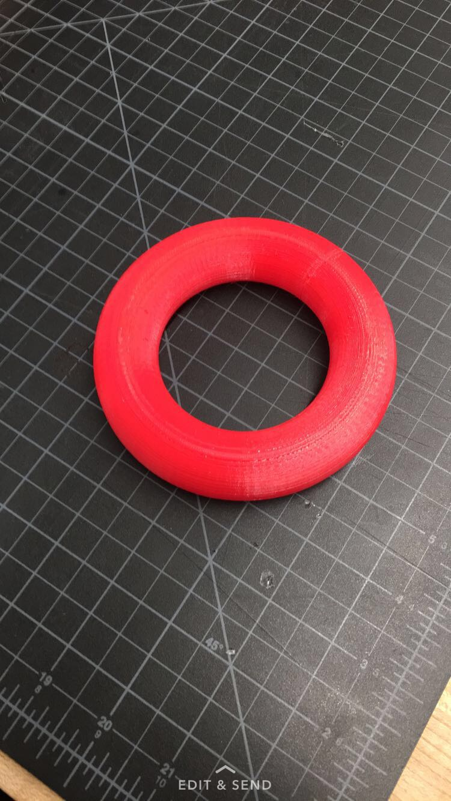
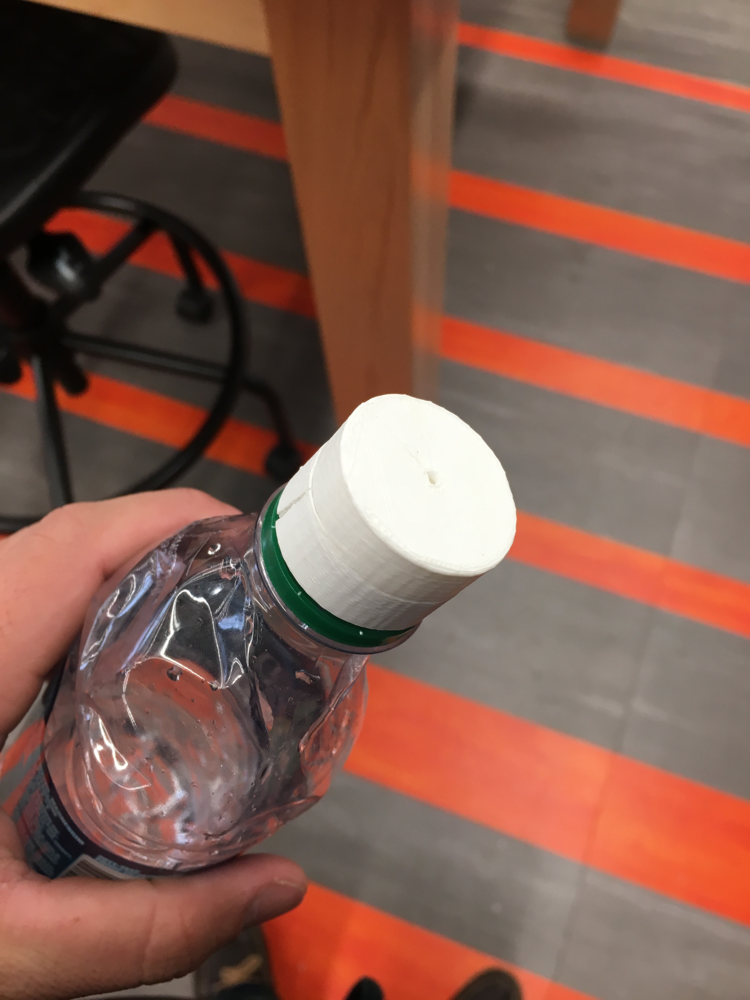

First off, we had to find the rules and limits for the MakerBot Replicator 5th Gen printers. The first rule is that you can't have to object to big because the printer has to have enough room for it to print the object precisely and accurately. also, the object has to be small enough for the printer to print the whole entire thing. Next you cannot have multiple materials printing at the same time because well the machine won't be able to print them. Because the printer is an additive one it has to print with layers.
Second, We were required to scan our heads and shoulder area with a i pad looking device. The device would give a 3D model of yourself. After that we had to use meshmixer a program to fill in any holes the device missed. Sizing the head was a difficult and time consuming process... umfortunantly my head was never printed but i do have an image of what it looked like on a computer!
Third, we had to design an object that could not be made subractively which was actually a very challenging task. This means you could not take a block and shave stuff off of it to make something. For this i decided to make a large ringe shaped donut. The way that i designed it was going on fusion making a ring then i hollowed it out. I do not have the original files unfortunantly.... But it turned out great!
Finally, J Gro and i created a drip irrigation cap. What this does is when put on a water bottle it drips out water to like water plants. Ours turned out succeful first try even though it was very basic!
  